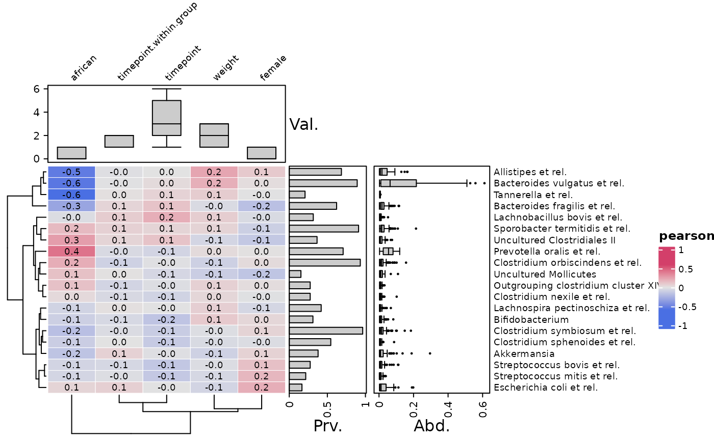
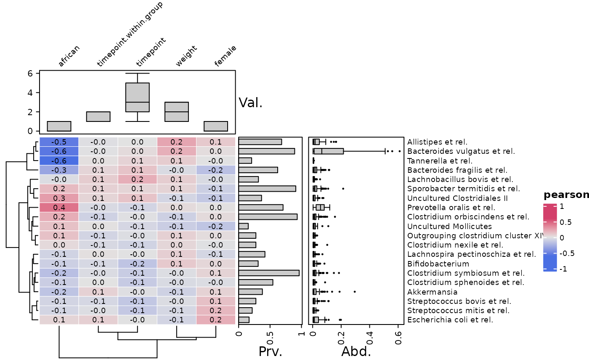
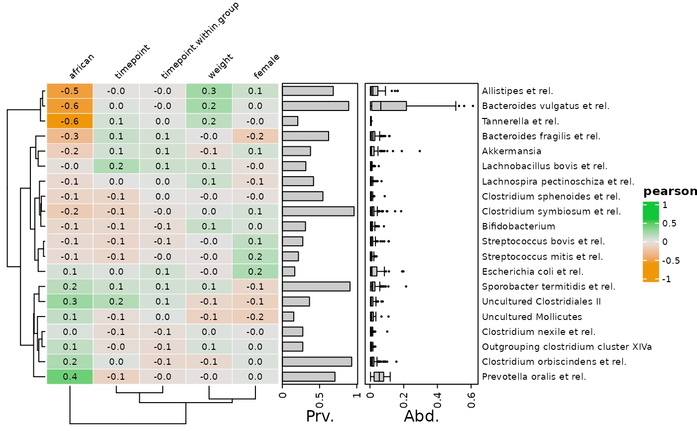
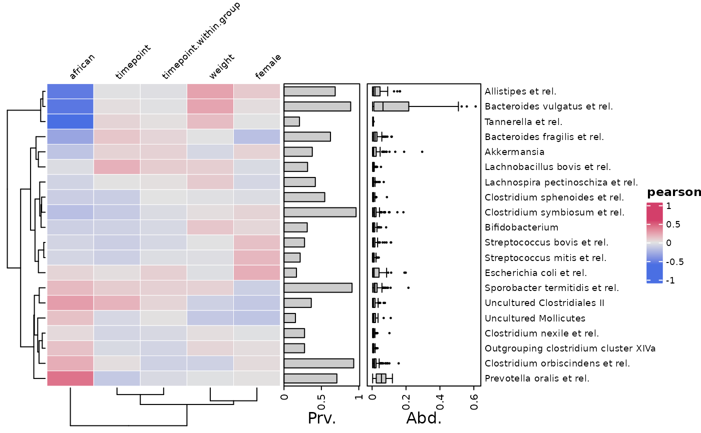
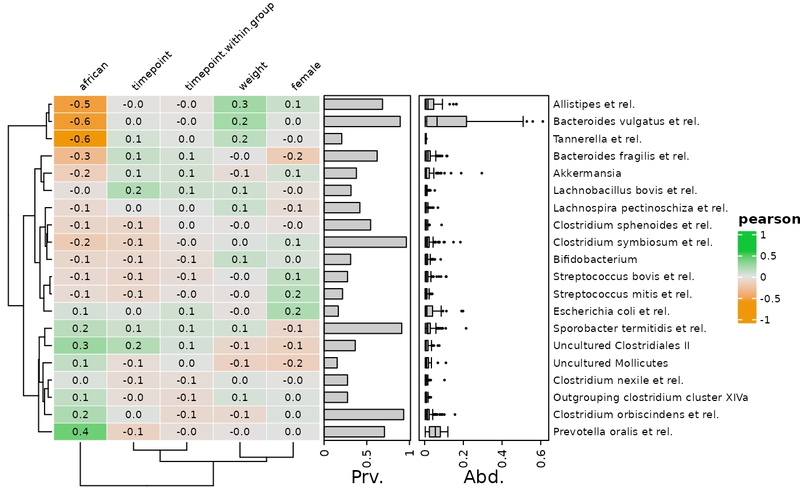
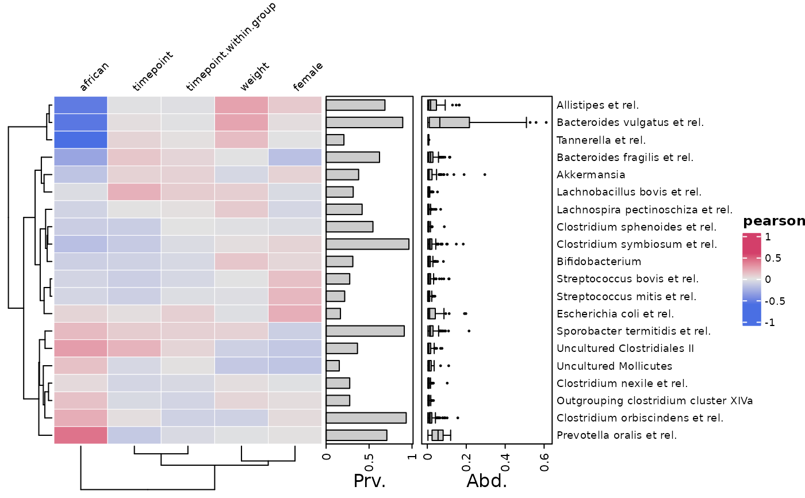

Plot correlations between (transformed) microbial abundances and (selected) numeric-like sample_data variables from a phyloseq object.
Lots of customisation options available through the listed arguments,
and you can pass any other argument from ComplexHeatmap::Heatmap() too.
Usage
cor_heatmap(
data,
taxa = NA,
tax_anno = taxAnnotation(Prev. = anno_tax_prev(), Abun. = anno_tax_box()),
taxon_renamer = identity,
vars = NA,
var_anno = NULL,
cor = c("pearson", "kendall", "spearman"),
cor_use = "everything",
colors = heat_palette(palette = "Blue-Red 2", sym = TRUE),
numbers = heat_numbers(decimals = 1, col = "black", fontface = "plain"),
taxa_side = "right",
vars_side = adjacent_side(taxa_side),
seriation_method = "OLO_ward",
seriation_dist = "euclidean",
seriation_method_col = seriation_method,
seriation_dist_col = seriation_dist,
var_fun = "identity",
grid_col = "white",
grid_lwd = 0.5,
anno_tax = NULL,
anno_vars = NULL,
...
)Arguments
- data
phyloseq or phyloseq extra
- taxa
list of taxa to include, or NA for all
- tax_anno
NULL or annotation function for taxa: taxAnnotation() output.
- taxon_renamer
function to rename taxa before plotting
- vars
selection of variable names from sample_data
- var_anno
NULL or annotation function for variables: varAnnotation() output.
- cor
correlation coefficient. pearson/kendall/spearman, can be abbreviated (used as legend title)
- cor_use
passed to cor(use = cor_use)
- colors
output of heat_palette() to set heatmap fill color scheme
- numbers
output of heat_numbers() to draw numbers on heatmap cells
- taxa_side
"top"/"right"/"bottom"/"left": controls heatmap orientation and where any annotations specified in tax_anno are placed
- vars_side
which side to place any variable annotations specified in var_anno, must be an adjacent side to taxa_side
- seriation_method
method to order the rows (in seriation::seriate)
- seriation_dist
distance to use in seriation_method (if needed)
- seriation_method_col
method to order the columns (in seriation::seriate)
- seriation_dist_col
distance to use in seriation_method_col (if needed)
- var_fun
a function (or name of) to be applied to columns of a matrix of vars before correlating (but not used in any variable annotations)
- grid_col
colour of gridlines, or NA for none
- grid_lwd
width of gridlines
- anno_tax
DEPRECATED: optional annotation of taxa distributions: tax_anno() list output, or a pre-made ComplexHeatmap HeatmapAnnotation
- anno_vars
DEPRECATED: use var_anno argument instead. Optional annotation of variable distributions: var_anno() list output, or a pre-made ComplexHeatmap HeatmapAnnotation
- ...
Arguments passed on to
ComplexHeatmap::Heatmaprow_dend_widthWidth of the row dendrogram, should be a
unitobject.show_row_dendWhether show row dendrogram?
row_dend_gpGraphic parameters for the dendrogram segments. If users already provide a
dendrogramobject with edges rendered, this argument will be ignored.show_row_namesWhether show row names.
row_names_gpGraphic parameters for row names.
row_names_rotRotation of row names.
row_names_centeredShould row names put centered?
show_heatmap_legendWhether show heatmap legend?
Details
Using a data.frame for the data argument is also possible, in which case the (selected) numeric-like variables will be correlated with each other, and all arguments relating to taxa will be ignored.
Examples
library(dplyr)
data("dietswap", package = "microbiome")
# create a couple of numerical variables to use
psq <- dietswap %>%
ps_mutate(
weight = recode(bmi_group, obese = 3, overweight = 2, lean = 1),
female = if_else(sex == "female", true = 1, false = 0),
african = if_else(nationality == "AFR", true = 1, false = 0)
)
psq <- tax_filter(psq, min_prevalence = 1 / 10, min_sample_abundance = 1 / 10)
#> Proportional min_prevalence given: 0.1 --> min 23/222 samples.
psq <- tax_agg(psq, "Genus")
# randomly select 20 taxa from the 50 most abundant taxa
set.seed(123)
taxa <- sample(tax_top(psq, n = 50), size = 20)
# NOTE: detection threshold set to 50 as HITchip example data seems to have background noise
ud <- 50
# make simple correlation heatmap with all numeric-like variables
cor_heatmap(
data = psq, taxa = taxa,
tax_anno = taxAnnotation(
Prv. = anno_tax_prev(undetected = ud),
Abd. = anno_tax_box(undetected = ud)
)
)
 # You can create an annotation object separately in advance
taxAnno <- taxAnnotation(
Prv. = anno_tax_prev(undetected = ud), Abd. = anno_tax_box(undetected = ud)
)
class(taxAnno) # "function"
#> [1] "function"
# You can select which numeric-like variables to correlate taxa with
cor_heatmap(
psq, taxa,
vars = c("african", "female", "weight"), tax_anno = taxAnno
)
# Also you can choose alternative correlation measures
cor_heatmap(psq, taxa, cor = "spearman", tax_anno = taxAnno)
# You can create an annotation object separately in advance
taxAnno <- taxAnnotation(
Prv. = anno_tax_prev(undetected = ud), Abd. = anno_tax_box(undetected = ud)
)
class(taxAnno) # "function"
#> [1] "function"
# You can select which numeric-like variables to correlate taxa with
cor_heatmap(
psq, taxa,
vars = c("african", "female", "weight"), tax_anno = taxAnno
)
# Also you can choose alternative correlation measures
cor_heatmap(psq, taxa, cor = "spearman", tax_anno = taxAnno)
 # Annotating variables is possible, and easy with varAnnotation()
cor_heatmap(
data = psq, taxa = taxa, tax_anno = taxAnno,
var_anno = varAnnotation(Val. = anno_var_box(size = grid::unit(2, "cm")))
)
# Annotating variables is possible, and easy with varAnnotation()
cor_heatmap(
data = psq, taxa = taxa, tax_anno = taxAnno,
var_anno = varAnnotation(Val. = anno_var_box(size = grid::unit(2, "cm")))
)
 # you can transform the variables before correlating by var_fun
# notice this does not affect the data used for annotations
cor_heatmap(
data = psq, taxa = taxa, tax_anno = taxAnno, var_fun = "exp",
var_anno = varAnnotation(Val. = anno_var_box(size = grid::unit(2, "cm")))
)

# other and multiple annotations
cor_heatmap(
data = psq, taxa = taxa[1:10], vars = c("african", "weight", "female"),
tax_anno = taxAnno,
var_anno = varAnnotation(
value = anno_var_hist(size = grid::unit(15, "mm")),
log10p = anno_var_box(function(x) log10(x + 1))
)
)
# you can transform the variables before correlating by var_fun
# notice this does not affect the data used for annotations
cor_heatmap(
data = psq, taxa = taxa, tax_anno = taxAnno, var_fun = "exp",
var_anno = varAnnotation(Val. = anno_var_box(size = grid::unit(2, "cm")))
)

# other and multiple annotations
cor_heatmap(
data = psq, taxa = taxa[1:10], vars = c("african", "weight", "female"),
tax_anno = taxAnno,
var_anno = varAnnotation(
value = anno_var_hist(size = grid::unit(15, "mm")),
log10p = anno_var_box(function(x) log10(x + 1))
)
)
 # make the same heatmap, but rotated
cor_heatmap(
data = psq, taxa = taxa[1:10], vars = c("african", "weight", "female"),
tax_anno = taxAnno, taxa_side = "top",
var_anno = varAnnotation(
value = anno_var_hist(size = grid::unit(15, "mm")),
log10p = anno_var_box(function(x) log10(x + 1))
)
)
# make the same heatmap, but rotated
cor_heatmap(
data = psq, taxa = taxa[1:10], vars = c("african", "weight", "female"),
tax_anno = taxAnno, taxa_side = "top",
var_anno = varAnnotation(
value = anno_var_hist(size = grid::unit(15, "mm")),
log10p = anno_var_box(function(x) log10(x + 1))
)
)
 # You can change the colour scheme used, using heat_palette()
cor_heatmap(
data = psq, taxa = taxa, tax_anno = taxAnno,
colors = heat_palette("Green-Orange", rev = TRUE, sym = TRUE)
)

# You can hide or change the style of the numbers with heat_numbers()
cor_heatmap(data = psq, taxa = taxa, tax_anno = taxAnno, numbers = NULL)

cor_heatmap(
data = psq, taxa = taxa, tax_anno = taxAnno,
colors = heat_palette("Berlin", rev = TRUE, sym = TRUE),
numbers = heat_numbers(decimals = 2, col = "white", fontface = "bold")
)
# You can hide or change the style of the grid lines with grid_col & grid_lwd
cor_heatmap(psq, taxa = taxa, tax_anno = taxAnno, grid_col = NA) # hidden
cor_heatmap(psq, taxa = taxa, tax_anno = taxAnno, grid_lwd = 3) # bigger
# You can change the colour scheme used, using heat_palette()
cor_heatmap(
data = psq, taxa = taxa, tax_anno = taxAnno,
colors = heat_palette("Green-Orange", rev = TRUE, sym = TRUE)
)

# You can hide or change the style of the numbers with heat_numbers()
cor_heatmap(data = psq, taxa = taxa, tax_anno = taxAnno, numbers = NULL)

cor_heatmap(
data = psq, taxa = taxa, tax_anno = taxAnno,
colors = heat_palette("Berlin", rev = TRUE, sym = TRUE),
numbers = heat_numbers(decimals = 2, col = "white", fontface = "bold")
)
# You can hide or change the style of the grid lines with grid_col & grid_lwd
cor_heatmap(psq, taxa = taxa, tax_anno = taxAnno, grid_col = NA) # hidden
cor_heatmap(psq, taxa = taxa, tax_anno = taxAnno, grid_lwd = 3) # bigger
 # You can pass any other argument from `ComplexHeatmap::Heatmap()` to `...`
# e.g. You can set the absolute width and height of the heatmap body
cor_heatmap(
data = psq, taxa = taxa, tax_anno = taxAnno,
width = grid::unit(40, "mm"), height = grid::unit(10, "cm")
)
# e.g. You can suppress the legend
cor_heatmap(
data = psq, taxa = taxa, tax_anno = taxAnno, show_heatmap_legend = FALSE,
width = grid::unit(40, "mm"), height = grid::unit(10, "cm")
)
# You can pass any other argument from `ComplexHeatmap::Heatmap()` to `...`
# e.g. You can set the absolute width and height of the heatmap body
cor_heatmap(
data = psq, taxa = taxa, tax_anno = taxAnno,
width = grid::unit(40, "mm"), height = grid::unit(10, "cm")
)
# e.g. You can suppress the legend
cor_heatmap(
data = psq, taxa = taxa, tax_anno = taxAnno, show_heatmap_legend = FALSE,
width = grid::unit(40, "mm"), height = grid::unit(10, "cm")
)